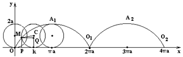

6.6.2*. Циклоида
Обыкновенной циклоидой называется кривая, описываемая
точкой круга, катящегося без скольжения по прямой линии.
Пусть  – прямая, по
которой катится круг радиуса
– прямая, по
которой катится круг радиуса  . Тогда , где –
точка касания. За параметр
. Тогда , где –
точка касания. За параметр  примем угол
поворота относительно :
- угол качения (в радианах). Так как
качение окружности происходит без скольжения, то .
примем угол
поворота относительно :
- угол качения (в радианах). Так как
качение окружности происходит без скольжения, то .
– прямая, по
которой катится круг радиуса . Тогда , где –
точка касания. За параметр примем угол
поворота относительно :
- угол качения (в радианах). Так как
качение окружности происходит без скольжения, то .
Из рисунка видно, что
Таким образом, параметрические уравнения циклоиды
Параметрическое
уравнение циклоиды
где
. При получаем
первую арку циклоиды. Укажем, что длина дуги
Площадь под одной
аркой циклоиды
,
а площадь под одной аркой .